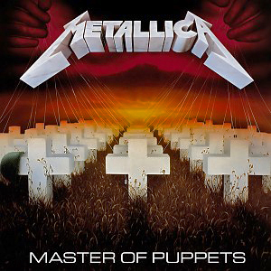

About the Album
"Master of Puppets" is Metallica's third studio album, released in 1986. Fast, complex and relentlessly heavy, it explores control, addiction and manipulation through long, epic song structures and razor-sharp riffs. It was the band's last album with bassist Cliff Burton, and it became the first metal recording selected for preservation in the US National Recording Registry.
Tracklist
- Battery
- Master of Puppets
- The Thing That Should Not Be
- Welcome Home (Sanitarium)
- Disposable Heroes
- Leper Messiah
- Orion
- Damage, Inc.